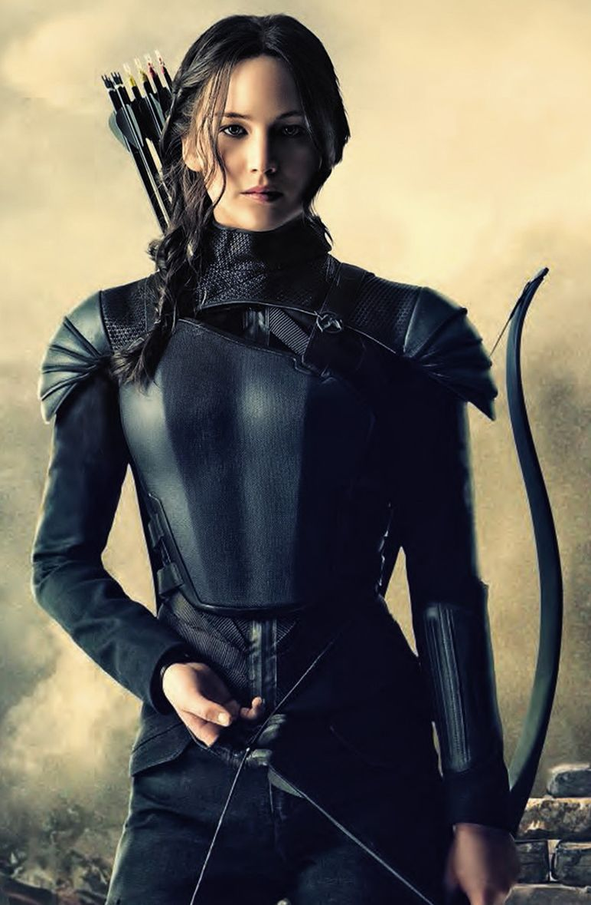
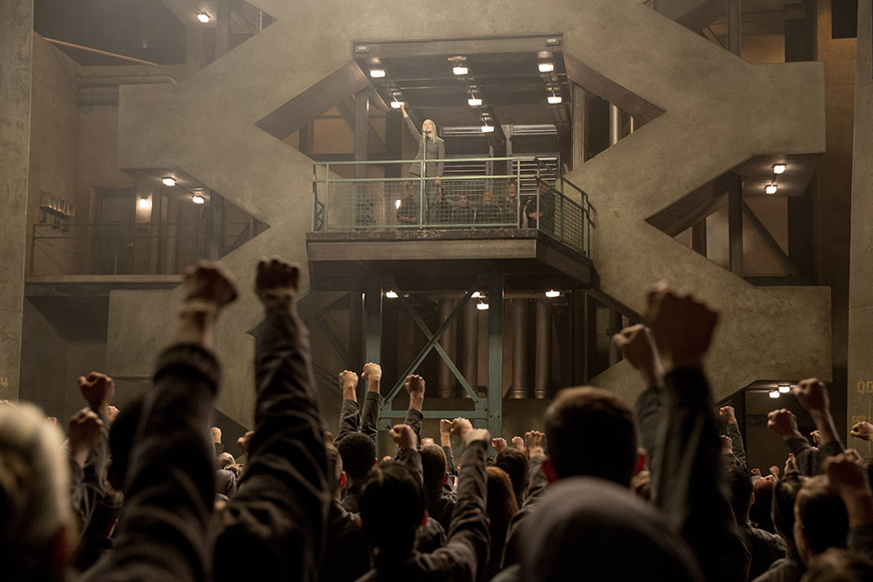

Mockingjay Part 1
The Mockingjay Arises
At the end of the movie Catching Fire we see Katniss is being saved and later on find out in the movie Mockingjay part 1 that District 13 saved her, Finnick, and Beetee. While the Capitol captured Peeta, Johanna, Annie, and Enobaria. Alma Coin the leader of District 13 saved Katniss because she already gave hope to the other districts to start a rebellion. She wants Katniss to continue giving hope and encourgae the other districts to rise with them and fight against the Capitol, Panem. Katniss at first doesn't want that responsability, but then decides to do it to save Peeta with some conditions. Her first condition is for immunity to all the surviving tributes including Peeta Mellark and Annie Cresta. She also wants hunting rights, for her sister to have her cat, and permission to kill President Snow. Alma Coin accepts her conditions and Katniss starts with some propaganda to show that the mockingjay is alive.
Peeta's Torture
A couple of days of Katniss not knowing what happend to Peeta, she sees him for the first time since the games in an interview where he seems pretty beat up. His eyes are swollen and his face seems sucked in. Peeta is shown on interviews so Katniss can see him being tortured and hear Peeta say how Katniss should not fight or else she will die. Peeta is being tortured by being beaten up and hijacked using tracker jacker venom to distort his memories of Katniss until he believes that she is an evil muttation. The Capitol wants to use Peeta as a weapon to kill Katniss for them, thats why they use venome to make him think Katniss is evil. When Peeta is saved and sees Katniss for the first time since the games he attacks her and tries to kill her. His love for her has been turned into hatred.
District 13
District 13 was believed to be destroyed, when in reality district 13 made a treaty with the Capitol. The Capitol decided to accept the treaty to avoid a nuclear war. The people from district 13 took shelter underground to some bunkers while the Capitol bombed district 13 until it was unrecognizable. They decided to rise once more after seeing the print Katniss left in the games. They planned out how to protect her from Snow and the Games and to take her back to district 13. Katniss was their way out to rebel against the Capitol and used the 75th hunger games to save her. Once Katniss was saved and she decided to become the mockingjay on her own they put their plan into action.